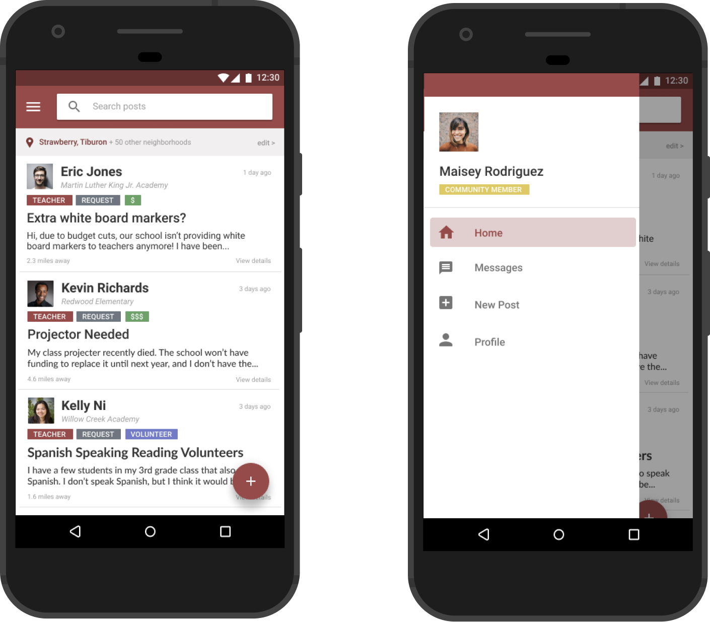
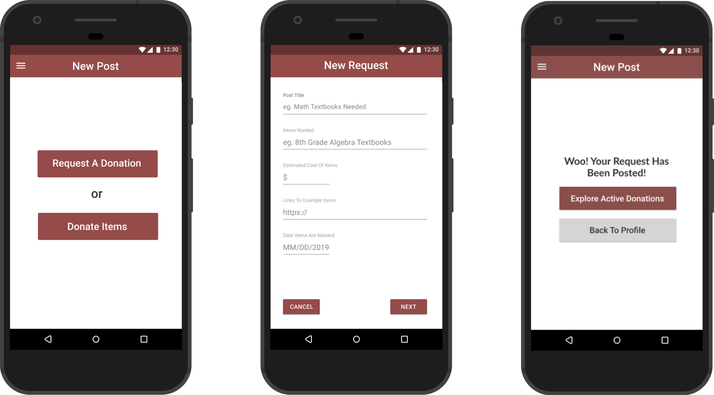
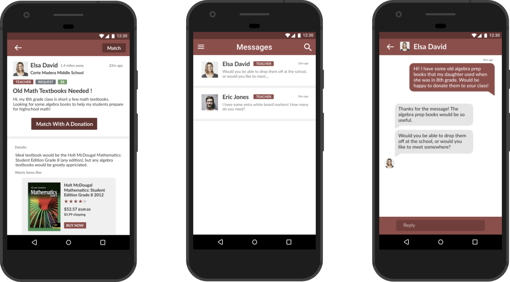

high fidelity

Onboarding
A screen-by-screen user flow to help new users construct their profiles. Validates a teacher profile creation with a .edu email address. Profiles contain basic information about the teacher’s classroom (subject, number of students) and a short description about the teacher.
Navigation
The homepage of the application contains all the active posts. Each post includes tags to help users quickly navigate through them as well as information on how far away a teacher is. The navigation drawer allows for easy access to all other features of the application.
Posting
Teachers have the option to both request a donation and donate items. For both post types, there is a screen-by-screen user flow helping users fill in all the necessary information.
Donating
When a relevant post is viewed (by both teachers and donors), an option to match the request with a donation is possible. Once a user matches with a post, they are able to chat to determine the logistics of the donation.